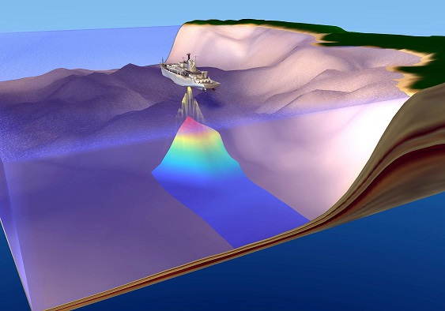
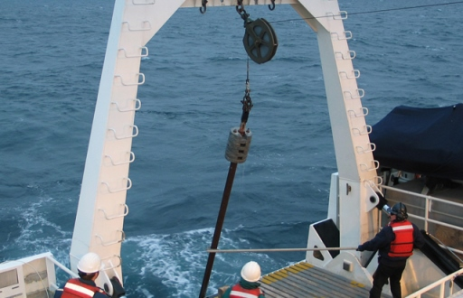
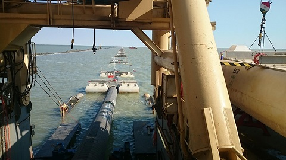
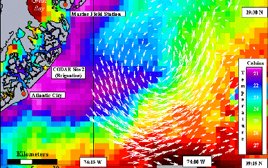
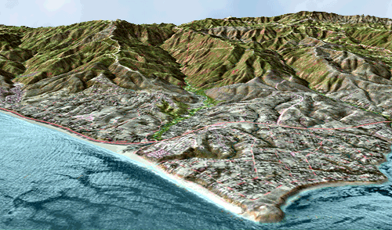

Services

Offshore, Nearshore & Onshore Survey
- Shallow seismic survey for construction at offshore installation/sites, and pipe-laying.
- Bathymetry Survey using Echo Sounder and Heave Compensator, in navigation channels, lakes and reservoir.
- Side scanning with USBL system to sweep the navigation channel.
- Feasibility studies for development, expansion of ports, harbours and jetties.
- Setup of piling control point for Jetty and base-line measurement of bridges.
- Establish survey datum in area with reference to available chart datum.
- Land Survey using Total Station and Level.
Geotechnical Investigation, Positioning & Navigation
- Provide position to Geotechnical vessel/ barge/ pontoon.
- Seabed sampling by Drop Corer and Grab Sampler.
- Provide position to Barges and Tugs for safe channel navigation.
- Channel Buoy Positioning/ marking


Pipeline & Cable Route Survey
- Pipe laying, Jetty/Breakwater construction survey.
- Pre-engineering and pre-lay support survey.
- Post-construction support, pre-burial and post-burial survey.
- As-built and CP survey.
Dredging Support Survey
- Provide Quality Control and Quality Assurance for pre and post-dredging survey.
- Positioning during dredging operations by CSD.
- Quantity calculation of dredging material
- Channel/ Basin model studies for sloop.


Oceanographic Investigation
- Acquisition and processing of ocean current, tide and wave data.
- Ocean water sampling and analysis.
Geospatial Services
- GIS data capturing (RS, Aerial RS, PG, Ground Survey), Topographic Survey
- Airborne LIDAR & Terrestrial LIDAR data processing and classification
- CAD Drafting and Paper to CAD conversion
- Data Analysis & Modelling, Data Migration
- GIS User Application Development
- CADD & Engineering Services

Clients
Sustainable Coastal Protection & Management Investment Program (SCPMIP),Govt of Karnataka
P.N. Shidore Civil Engineers (I) Pvt. Ltd., Mumbai
Marshall Marine International Pvt Ltd. Mumbai
Contact Us
Plot No-74/02, Neelkanth Villa
Sector-12, Vashi
Navi Mumbai -400703
Tel: +91-9004240005
Email: phjsurvey@gmail.com
Sector-12, Vashi
Navi Mumbai -400703
Tel: +91-9004240005
Email: phjsurvey@gmail.com